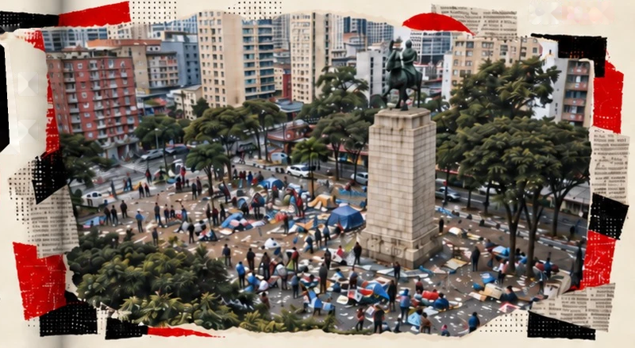
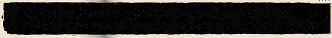
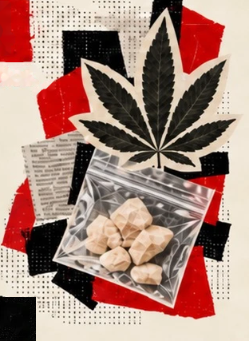

CENTRO E MORADIA
Na região da Luz e arredores, comércio,
pequenos hotéis, pensões, deslocamentos
e formas precárias de moradia compuseram
um território de grande circulação
e desigualdade.




SOB EFEITO
Uma cena de uso tem história, circulação,
mercado e disputas pela cidade.
Na região da Luz e arredores, comércio,
pequenos hotéis, pensões, deslocamentos
e formas precárias de moradia compuseram
um território de grande circulação
e desigualdade.
Na reconstrução histórica de Alves e Pereira,
a expressão “Cracolândia” aparece na imprensa
em 1995. O nome participa da construção
da região como problema público.
A operação interditou estabelecimentos
e reorganizou circuitos. Parte dos frequentadores
se deslocou e voltou a se concentrar em ruas
próximas. Os autores relacionam intervenções
desse período a expectativas de valorização
imobiliária e projetos para a região, como o Nova Luz.
LECUCA, 6ª onda em São Paulo: 144 participantes adultos.
71,4%
em situação
de rua
84,0%
sem atividade
remunerada
90,8%
com histórico
relatado de uso
de crack
O levantamento retrata frequentadores de uma cena aberta de uso,
não todos os usuários de drogas nem todas as pessoas em situação de rua.